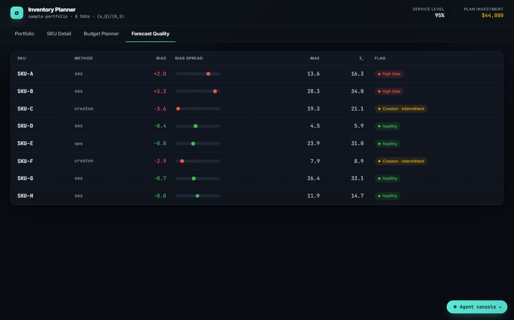

Case Study — Forecasting
Demand Forecasting & Segmentation at Scale
Classifying and forecasting 34,498 SKUs across 75 public retail datasets, end to end, with no manual per-SKU tuning.

Problem
Most retail and CPG SKUs don't have smooth, predictable demand. A large share of them are intermittent — long stretches of zero demand punctuated by occasional orders — which breaks naive forecasting methods like simple moving averages or plain exponential smoothing. Forecast the wrong way and every downstream decision (safety stock, reorder points, purchasing) inherits the error.
Method
Before forecasting a single SKU, classify it. Linchpin's engine runs ABC-XYZ segmentation to separate steady, high-volume SKUs from volatile or intermittent ones, then routes intermittent SKUs to Croston's method instead of a generic smoothing model — the demand-classification approach laid out in Vandeput (2020), Ch. 9.
What I built
I ran Linchpin's full classify → forecast → inventory-policy pipeline end to end against 75 public retail datasets — the M5 Forecasting competition (split by store and department), the UCI Online Retail dataset, and the Kaggle Superstore dataset — through the same agent pipeline used for every other capability, with no manual per-SKU tuning.
Result
Run against public benchmark datasets (M5 / UCI Online Retail / Superstore) via Linchpin's own portfolio benchmark script — not client data. The full dataset-by-dataset breakdown is reproducible from the Linchpin repository.